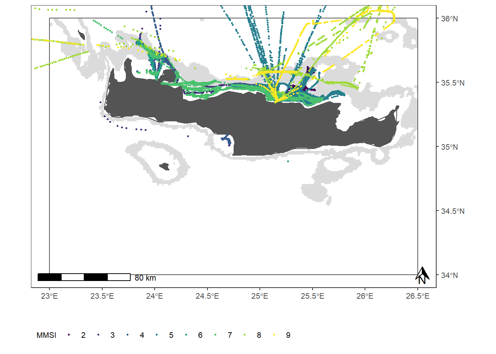

Starting from the raw fishing data of 5 vessels operating in GSA 23 apply the R4ais workflow to obtain fishing segments, and then analyse the data to obtain a map of the fishing effort. The exercise is divided into 4 questions which helps you to get the desired result. All the code you need is part of the script seen today.
You need to check your working directory (WD), which has to be “dwrs_workshop_2022”. The getwd() command shows you where the WD is. The setwd('..') command set the WD to a backward place.
getwd() # The WD have to be "dwrs_workshop_2022"## [1] "C:/Users/e.armelloni/OneDrive/Lavoro/AIS/Lavori/Lavori_2022/GFCM_workshop/dwrs_workshop_2022"setwd('..') # Push one to set the WD to a backward place
getwd() # check the WD: it have to be "practical_session_2. If is not yet right, push again on line 6 and check"## [1] "C:/Users/e.armelloni/OneDrive/Lavoro/AIS/Lavori/Lavori_2022/GFCM_workshop"Data needed for the exercise are the sample fishing points
sample_data=readRDS("practical_session_2/data/exercise_data.rData")| MMSI | datetime | longitude | latitude | speed | |
|---|---|---|---|---|---|
| 1.1 | 2 | 2018-12-04 02:55:13 | 25.0754 | 35.3787 | 4.1 |
| 1.2 | 2 | 2018-12-04 03:43:33 | 25.0739 | 35.4097 | 7.3 |
| 1.3 | 2 | 2018-12-04 03:49:35 | 25.0645 | 35.4194 | 8.6 |
| 1.4 | 2 | 2018-12-04 04:26:50 | 25.0041 | 35.4639 | 8.9 |
| 1.5 | 2 | 2018-12-04 04:43:57 | 25.0306 | 35.4607 | 2.7 |
| 1.6 | 2 | 2018-12-04 06:02:31 | 25.1061 | 35.4426 | 3.3 |
## Coordinate system already present. Adding new coordinate system, which will replace the existing one.
In addition you need to load the functions contained in the R4ais release. You need just to run the following lines
base_dir=getwd()
# setwd(file.path(base_dir, 'practical_session_1'))
dirmaps="practical_session_1/AIS_data_processing/maps" # path of the maps directory
file_parameters="practical_session_1/AIS_data_processing/data/parameters.csv" # import parameter table
file_centroids="practical_session_1/AIS_data_processing/data/centroids.csv" # import centroids
wgs="+proj=longlat +datum=WGS84 +no_defs +ellps=WGS84 +towgs84=0,0,0" # Insert your coordinates system
install.missing.packages=T # set to TRUE if want to allow automatic installation of missing packages.
source("practical_session_1/AIS_data_processing/R/global_functions.R") # load all internal function required
ports<-read_sf(file.path(dirmaps, "med_harb_gsa")) # import list of ports
port_buf<-st_buffer(ports, 0.001) # create a buffer
st_crs(port_buf)=wgs # set crs
coastal_ban_zone=read_sf(file.path(dirmaps, "coastal_ban_zone")) # import managment depth layer
st_crs(coastal_ban_zone)=wgs # set crs
grid<-read_sf(file.path(dirmaps, "grid01degrees")) # import a grid
grid$grid_id=seq(1:nrow(grid)) # create cell grid id
st_crs(grid)=wgs # set crs
centroids=inport_parameters(file.path(file_parameters), file.path(file_centroids))[[2]]
pars=inport_parameters(file.path(file_parameters), file.path(file_centroids))[[1]]
setwd(base_dir)Obtain the fishing segments from one single vessel (data provided): you need to identify the right function from the workflow. Tip: the output of the function is a list, so you need to process the output as x=plyr::ldply(x)
As input data you can use sample_dat_Q1, produced as:
sample_dat_Q1=sample_data[sample_data$MMSI==unique(sample_data$MMSI)[1],]Extract fishing segments from all the vessels in the sample data at once: you need to identify the right function from the workflow. The resulting object must be called all_fishing_tracks Tip: after having applied the right function, you need to pass the output to the following lines
# post process 1
for(i in 1:length(all_fishing_tracks)){
all_fishing_tracks[[i]]=plyr::ldply(all_fishing_tracks[[i]])
}
# post process 2
all_fishing_tracks=plyr::ldply(all_fishing_tracks)Intersect the obtained data with the grid of GSA 23. Tip: the piece of code you need is a for loop.
Before to start, run the following lines to import the correct function and parameters (attention: this is an extra tip).
source("practical_session_2/R/supporting_code/global_functions_light.R")
grid=read_sf("practical_session_2/maps/grid")
activate_filter='Y'
ref_years=2015:2018Create a map of the fishing effort. Tip: the following lines import all the shapefiles and the plot specifications.
grid_whole <- read_sf("practical_session_2/maps/grid")
land=read_sf("practical_session_2/maps/land")%>%
st_crop(., xmin=-10, xmax=43, ymin=20, ymax=48) #
gsa<-read_sf("practical_session_2/maps/gsa")%>%
dplyr::filter(SMU_CODE == '23' )
dep = read_sf("practical_session_2/maps/depth_contours")%>%
st_cast(., to = "POLYGON")%>%
st_set_crs(st_crs(gsa))%>%
st_buffer(0)%>%
st_crop(gsa)
lims=c(st_bbox(gsa[c(1,3)], st_bbox(gsa[c(2,4)])))
#### Specifications for the plot ####
# Plot size
text_size=8
plot_height=25
plot_width=18
library(ggspatial)
library(ggnewscale)
source("practical_session_2/R/supporting_code/plot_specifications.R")Looking at the fishing track data you may notice that there is poor information regarding the fishing trips and the fishing vessels, so our possibility of data exploration are limited.
Here you are provided with the tools to get a bite of information on the destination of the fishing trip and on the origin of the fishing vessel. Having this additional information at hand, you may create your own thematic map focusing on an aspect of your choice (for example effort by country, effort by port of destination etc..).
Here are provided some tips to make the job easier
vessels=unique(sample_data$MMSI)
all_fishing_trips=list()
for(i in 1:length(vessels)){
cat("\n", "vessel", i, "of", length(vessels))
cat("\n")
xvessel=sample_data[which(sample_data$MMSI == vessels[i]),]
dat_trip=create_fishing_trip(data=xvessel,
ports=ports,
ports_buffer=port_buf,
coastal_ban_zone=coastal_ban_zone)
all_fishing_trips[[i]]=dat_trip
}
all_fishing_trips=plyr::ldply(all_fishing_trips)Tip 2: the information of the ports is contained in the object ‘ports’, you need to paste it to the fishing data.
Tip 3: Nationality of the sample vessels: detailed vessel information is not provided for privacy reasons, however here we give the nationality of registration for the sample data.
vessel_country=data.frame(MMSI=2:9,
country=c(rep('ITA',4), rep('GRC',4)))